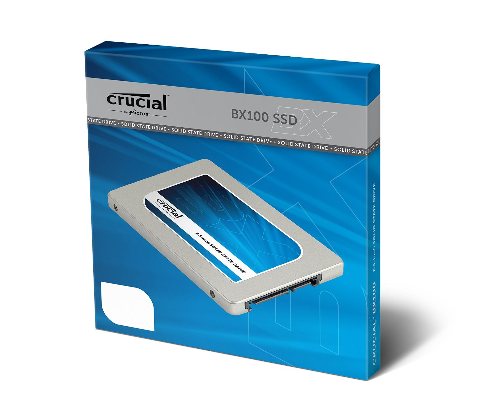
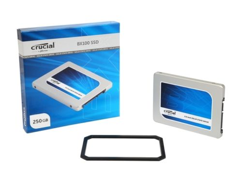
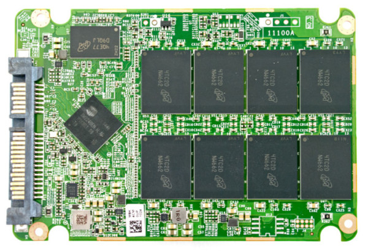

Итак, первым экземпляром в моих руках оказался SSD накопитель Crucial BX100 250GB.
Первое впечатление от накопителя такого формата, это даже не «ВАУ», а какое-то «нефига себе какой легкий»)) Да, в руках он ощущается, как кусочек пластика и тактильно это большая разница в сравнении с огромным 3,5 дюймовым стальным HDD!
Поставляется в приятной коробочке следующего вида:
Комплектация максимально проста — в коробке мы видим сам накопитель в пакетике, рамку-переходник для установки в ноутбук и активационный код для ПО Acronis True Image HD(для осуществления миграции ОС на новый диск):
Еще немного фото накопителя(кликабельно):
Параметры
Озвучим общие характеристики накопителя:
- Ёмкость — 250ГБ
- Тип ячеек памяти — MLC NAND
- Контроллер — Silicon Motion SM2246EN
- Интерфейс — SATA 6Гб/с(SATA 3)
- Форм-фактор — 2,5 дюйма
Также мы можем рассмотреть, что скрывается внутри корпуса и отметить там наличие буфера в виде чипа памяти фирмы Micron(DDRL), и собственно саму флэш-память от того же производителя:
Это в основном все, что мы видим в преобладающей части описаний в магазинах. Примечателен ли данный девайс чем-то? Из указанных характеристик ответ извлечь вряд-ли получится. Далее я расскажу, почему я остановил свой выбор на этом экземпляре, а также для каких целей он будет использоваться.
Причина и следствие
Итак, для чего я планирую использовать SSD накопитель? В свете прошедшего на прошлой неделе апгрейда моего рабочего компьютера, я решил сменить старый, добрый Seagate Barracuda 320GB 7200 об\м на что-то побыстрее. Этим «что-то» стал SSD накопитель. Как я к этому пришел, можно почитать на этой странице.
Таким образом становится понятно, что как минимум диск будет системным(то есть на него будет устанавливаться ОС). Также мне необходимо было перенести рабочие файлы и наработки + специфическое рабочее ПО. Все это должно быть отделено от системы. Следовательно, нужно разбивать диск на два раздела, но при условии, что диск будет объемом 120ГБ на ОС оставалось не так много места, как мне бы хотелось. Отсюда следует выбор объема диска на 250ГБ.
Идем далее) На втором разделе, кроме файлов и рабочего ПО, также должны размещаться виртуальные машины(понятно, что при таком раскладе скорость накопителя сильно снизится) . Добавим к этому график работы системы — 24\7 и становится явным следующее требование к накопителю. А именно его выносливость(возможное количество записываемой информации).
Добавлю, что система базируется на ОС Windows 8.1 Pro 64bit, в которой реализован механизм отправки команды TRIM, в связи с чем к контроллеру не выдвигались требования в виде наличия агрессивной сборки мусора.
Давайте посмотрим, что нам может предложить данный накопитель.
Ну с объёмом тут все понятно — больше заплатил, больше получил. С размерами SSD дисков сейчас проблем нет(в продаже можно найти накопители до 2ТБ), это скорее вопрос наличия средств.
Фирма производитель накопителя Crucial, является подразделением компании Micron, о чем недвусмысленно нам намекает надпись, как на коробке, так и на самом диске — «by Micron». Для нас, обычных пользователей это первая хорошая новость! Это значит, что флэш-память, используемая в накопителе является собственного производства, что гарантирует не только использование качественных чипов, но и применение самых передовых технологий для увеличения скорости и надежности.
Отметим, что на мировой технологической арене компаний производителей флэш-памяти можно пересчитать по пальцам. Для этого хватит полторы руки))
Как подтверждение, мы видим, что в модели BX100, которая вообщем-то является бюджетной, используется технологичная и скоростная флэш-память компании Micron, которая выполнена по техпроцессу 16nm и имеет тип MLC(в то время, как конкуренты используют уступающую в скорости и надежности память с типом TLC ). Производитель гарантирует максимальный ресурс записи в 72ТБ или 40ГБ в день в течении 5 лет! Это для моих критериев то, что доктор прописал!
Контроллер установлен стороннего производителя, а именно Silicon Motion SM2246EN. Как показывают тесты других накопителей, базирующихся на этом контроллере, например Transcend SSD370, скоростные показатели являются средними. НО… оказалось, что инженеры Crucial в тесном сотрудничестве с Silicon Motion разработали собственную прошивку под данный контроллер, что привело к увеличению производительности контроллера вплоть до 15%! И это очередная отличная для нас новость!
Остается добавить, что буфером для контроллера служит чип памяти Micron DDRL-1600 объемом 256МБ.
Что же получается? А получается весьма интересный накопитель с быстрой флэш-памятью, большим ресурсом записи, доработанной прошивкой и достаточно демократичной ценой) Весьма неплохо! Остается испытать все эти технологии в деле)
В следующей заметке, я опубликую первые тестовые данные, а также опишу моменты использования накопителя.